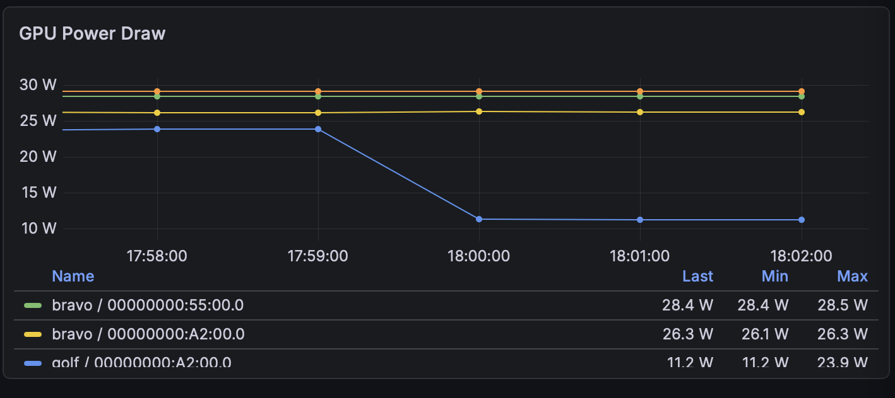
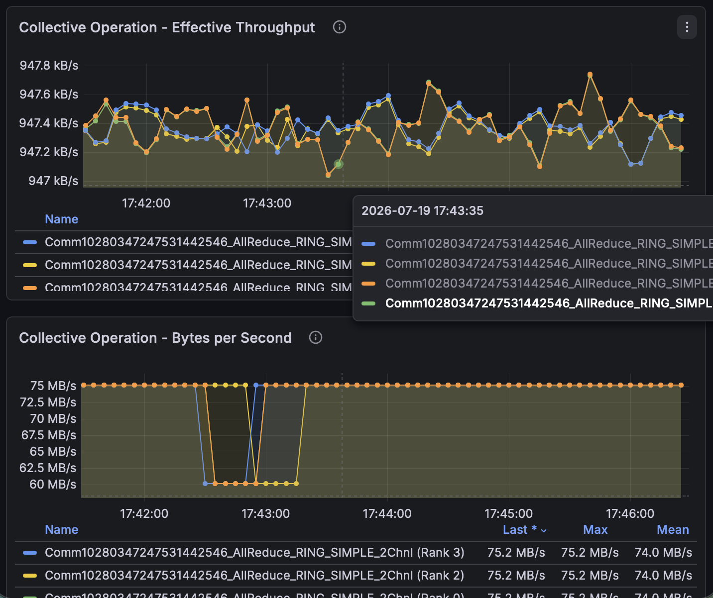
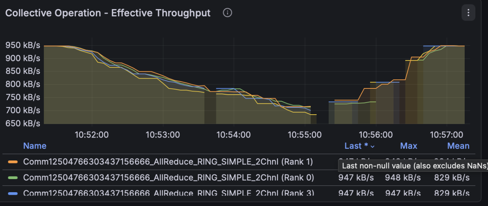
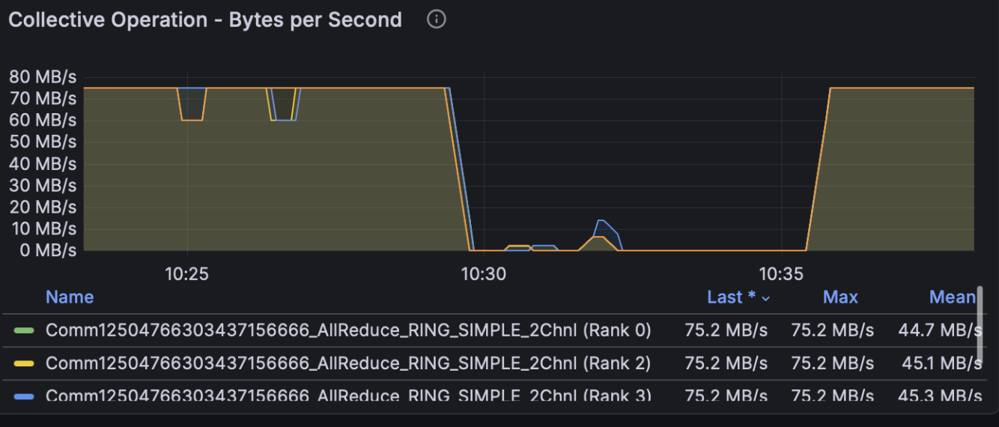
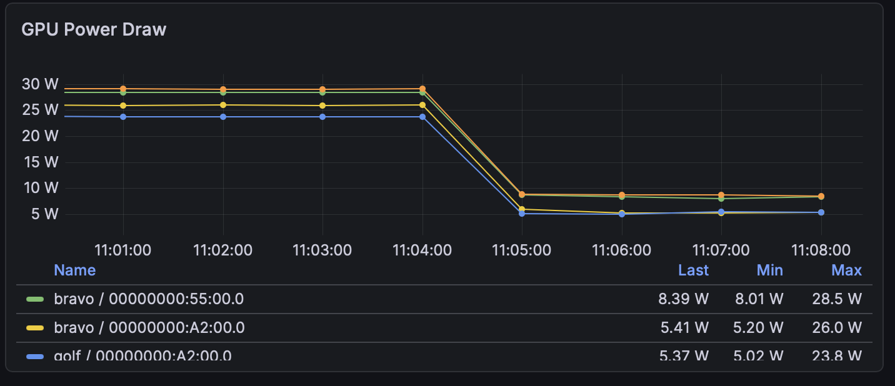
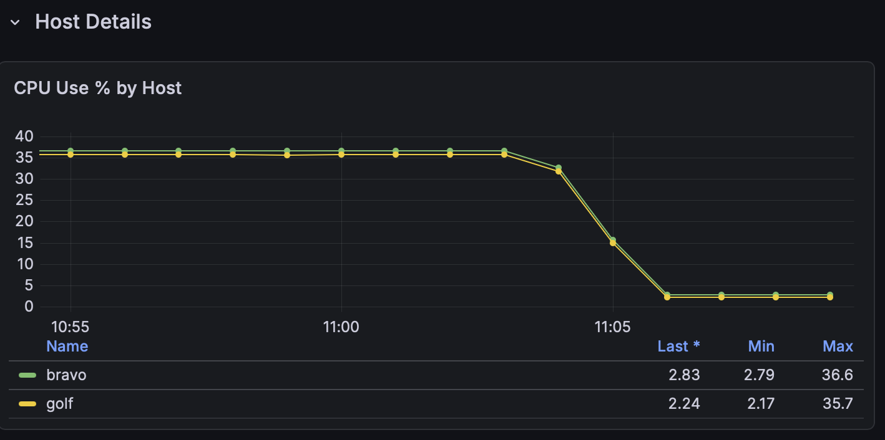
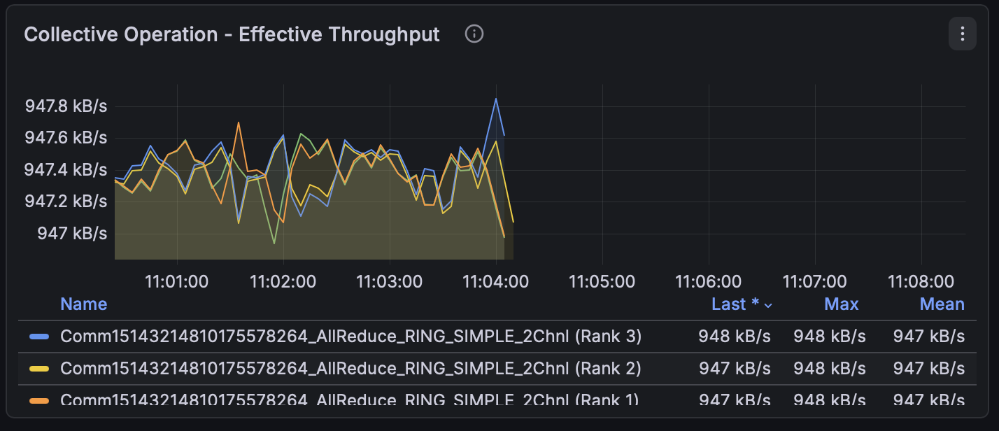
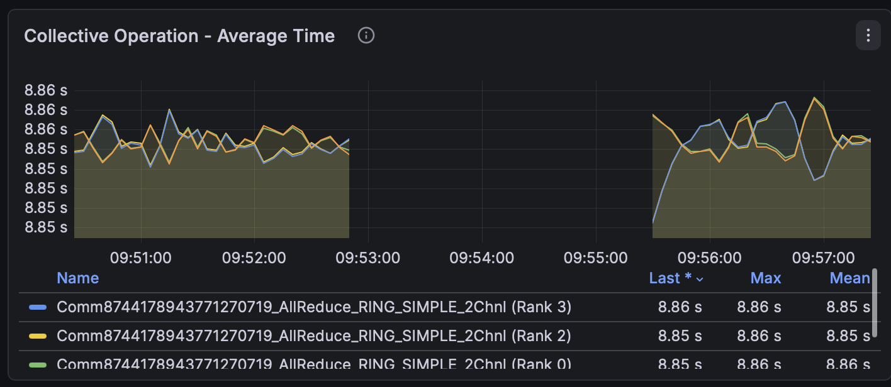
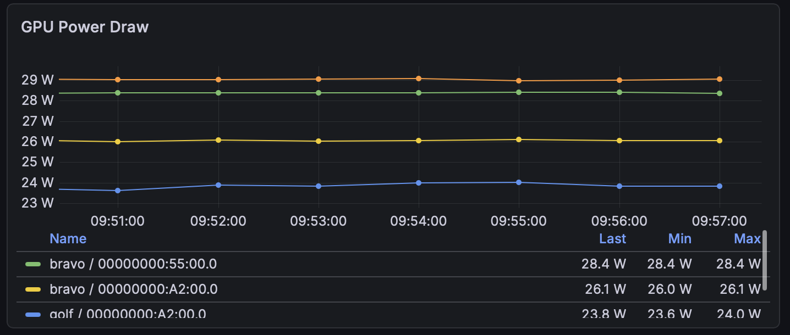

Fault Playbook
Mosaic Fault Playbook#
A fault-injection harness for the OpenMosaic profiler stack, plus a per-fault reference: the command that induces each failure, its metric signature, and how to recover. Every fault has a one-command inject and an auto-restoring safety timer.
Advances issue #31 (failure paths beyond happy-path testing). The harness is cluster-agnostic and reusable as an integration-test fixture.
The harness lives in tests/fault-injection/:
| File | Purpose |
|---|---|
Makefile |
inject/restore/status targets (no site values in it) |
config.mk.example |
copy to config.mk and edit for your cluster |
Prerequisites#
Run the harness on the head node (the node you launch the workload from). It reaches the other nodes over SSH, so nothing is installed on the workers; they only receive commands. You need:
- SSH key auth from the head node to every node in
NODES, including the head node to itself (the harness treats all nodes uniformly). sudoon every node fortcandnvidia-smi. Interactivesudois enough: you are prompted once, at inject time, and the auto-restore timer inherits that privilege. For unattended/CI use, add NOPASSWD for just those two binaries, e.g. in/etc/sudoers.d/:- docker access on the collector host (to bounce the collector container).
jqon the head node (formake watch).
Quick start#
cp config.mk.example config.mk # edit for your cluster
make # help
make status # what's running / injected, per node
make workload # start your workload (see config.mk)
make inject-netem-loss PCT=1 # break something...
make restore # ...and undo it
Run make on the head node, it reaches the other nodes over SSH; nothing is
installed on the workers. Every inject arms an auto-restore timer
(DEADMAN=<s>, default 300; 0 disables).
1. What it does#
The harness deliberately breaks a running multi-GPU collective workload in reproducible ways and lets you record how each one looks in Prometheus/Grafana.
Fault injection. Most faults arm an auto-restore timer (DEADMAN=<s>,
default 300); inject-kill-rank has none, since there is nothing to auto-restore
(recover with make workload).
| ID | Fault | Command (example) | Parameters |
|---|---|---|---|
| 1 | clamp one GPU's clock | make inject-slow-gpu RANK=3 CLK=1500 |
RANK which rank's GPU; CLK clock ceiling in MHz |
| 2 | packet loss | make inject-netem-loss PCT=1 |
PCT percentage of packets dropped |
| 2 | added latency | make inject-netem-delay MS=20 |
MS delay added per packet, in milliseconds |
| 3 | kill one rank | make inject-kill-rank RANK=3 |
RANK which rank to kill |
| 4 | kill the OTel collector | make inject-kill-collector |
none |
All injects also accept DEADMAN=<s> (auto-restore window; 0 disables) and
NODE=<host> where the target is a node rather than a rank.
For an arbitrary netem expression, call the shared injector directly:
make _netem NETEM="delay 50ms limit 5000".
Operational. Inspect state, drive the workload, and undo faults:
| Command (example) | What it does |
|---|---|
make or make help |
print help; never launches anything |
make status |
what's running / injected, per node |
make workload |
start the workload (WORKLOAD_CMD) |
make kill-workload |
stop the workload everywhere |
make watch |
live per-rank throughput |
make restore |
clear every fault on every node |
The design goal is that a reviewer can reproduce any fault, on their own cluster, from this document alone.
2. Setup#
cp config.mk.example config.mk # then edit config.mk for your cluster
make # prints help; never launches anything
make status # ranks / qdisc / armed timers, per node
config.mk holds every site-specific value and is gitignored, so your topology
and paths never get committed. The Makefile itself contains no hostnames,
interfaces, or paths. Every variable is documented inline in
config.mk.example; work through that file top to bottom and you have a
working config.
The workload#
make workload runs WORKLOAD_CMD (from config.mk) as one detached,
long-lived process. config.mk.example ships a reference launcher for
nccl-tests over TCP; replace it with your own workload. The fault targets
don't care what the workload is; they only use WORKLOAD_PROC to detect it.
Two rules the harness enforces, both of which matter for clean signatures:
- Not a restart loop. A loop rebuilds the NCCL communicator each iteration, resetting the profiler's two-window stabilization, so nothing exports. Use one long-lived process.
- One job at a time.
make workloadrefuses to start a second concurrent job; two jobs share the link and emit series with identicalhostname+ranklabels that silently interleave.
The safety timer (deadman)#
Every inject arms a timer that undoes the fault after DEADMAN seconds
(default 300). Because you reach each node over the same interface or GPU you're
degrading, this is what prevents a bad injection from stranding a node.
make inject-netem-loss PCT=1 # default 300s
make inject-netem-loss PCT=1 DEADMAN=600 # longer window (e.g. for screenshots)
make inject-netem-loss PCT=1 DEADMAN=0 # no timer; persists until `make restore`
3. Reading the metrics#
Cross-check derived metrics against an independent source#
Derived metrics (rates and latencies computed from transfer samples, rather than
counted directly) are worth validating against an independent source such as the
kernel NIC counter or DCGM. A per-rank rate in particular depends on how the
transport reports completion: if it reports early (e.g. TCP send() returning at
kernel handoff rather than on delivery), the rate can read high. Where you need a
ground truth, prefer a monotonic bytes counter and derive the rate yourself.
To read the wire directly, independent of any exporter:
R1=$(cat /sys/class/net/<iface>/statistics/tx_bytes); sleep 10
R2=$(cat /sys/class/net/<iface>/statistics/tx_bytes)
echo "$(( (R2-R1)/10/1000000 )) MB/s on the wire"
Rate queries alias: measure against a same-run baseline#
rate(<counter>[1m]) catches a whole number of scrape increments per window, so
consecutive reads can step by roughly one scrape's worth (often ~10%). Treat
sub-10% moves as noise, and measure a fault against a baseline captured in the
same run, not against a fixed number: steady-state throughput can vary run to
run.
Know your cluster class#
Which faults actually bite depends on what your workload is bound by:
| Bound by | delay/loss (Fault 2) |
GPU clamp (Fault 1) |
|---|---|---|
| network (e.g. 1 GbE, large messages) | strong, this is the bottleneck | weak, GPU has slack, profiler shows nothing |
| compute | weaker | strong, throughput drops |
| latency (small messages, many collectives) | delay bites hard |
varies |
The signatures below are described generically; concrete numbers vary by cluster.
4. Faults#
Each injected fault stands in for a class of real failure. The injection method is artificial, but the metric signature it produces is the one you would see from the real thing:
| Fault | Emulates |
|---|---|
| 1, GPU clock clamp | a GPU running below spec: thermal throttling from a failed fan or blocked airflow, a power cap, or a degrading VRM |
| 2, netem loss / delay | a degraded link: a failing NIC or cable, a congested or misconfigured switch port, or a noisy shared uplink |
| 3, kill a rank | a training process dying: OOM kill, a segfault, an uncorrectable GPU error, or a node dropping out |
| 4, kill the collector | an observability outage where the cluster is healthy but you have gone blind: collector crash, OOM, or a bad config rollout |
Fault 1: GPU clock clamp#
Locks one GPU to CLK MHz (nvidia-smi -lgc). Resolves rank → GPU → PID so it
clamps exactly the target GPU.
Signature: the only asymmetric fault. Every other fault moves all ranks
together; this one hits a single GPU. On a network-bound workload it may not
move collective throughput at all (the clamped GPU still finishes its reduce
before the link is ready), in which case the signature lives only in DCGM:
that one GPU's SM_CLOCK / POWER_USAGE drops while the others hold. The
profiler-based signatures some designs predict (rank_latency / collective_time
divergence) may not appear; verify against DCGM.
Near-binary: bisect CLK. Clamp too hard and the collective times out and
the job aborts (looking like Fault 3); too soft and nothing changes. For
reproducing a controlled slowdown, find the value that throttles one GPU
without killing the job by bisection.
Screenshot, DCGM GPU Power (or SM_CLOCK): the clamped GPU drops while the others stay flat.

Screenshot, throughput: flat throughout (on a network-bound cluster). The profiler showing nothing is the point.

Recovery: timer runs nvidia-smi -rgc; or make restore.
Fault 2: Network latency / loss#
make inject-netem-loss PCT=1 # packet loss
make inject-netem-delay MS=20 # added latency
make _netem NETEM="loss 3%" # arbitrary netem expression
Applies tc netem on NODE.
Signature: symmetric degradation. All ranks degrade together; network faults are symmetric. The magnitude and whether the job survives are cluster-dependent: on a bandwidth-bound cluster the usable band is narrow and the response is close to binary (a small loss degrades; a larger one flatlines the job). Bisect to find the value that degrades without killing.
The delay-becomes-loss trap. netem's default queue is limit 1000
packets. If the bandwidth-delay product exceeds that (tens of milliseconds on a fast
link), the queue overflows and a delay fault silently turns into heavy packet
loss. Raise it explicitly if you want pure latency:
make _netem NETEM="delay 50ms limit 5000".
Localization depends on the network topology. A ring all-reduce is bulk-synchronous, so the collective completion time is always gated by the slowest link; that much is topology-independent. Whether you can then localize the slow link is not:
- Shared uplink (this test cluster). All ranks on a node share one NIC
(
eth0), sotc netemon that NIC degrades every rank on the node together. They're indistinguishable in the metrics, so the fault cannot be localized below node granularity here, a limitation of the single-uplink setup, not of the metrics themselves. - Per-GPU NIC. Where each GPU has its own NIC, degrading one NIC slows only
the links that traverse it. The overall collective is still gated by that slow
link, but the rank-to-rank latency metrics (
rank_latency, per pair) should single out the affected pair, so the fault can be localized. (Not verified here; this cluster has no per-GPU NICs to test on.)
Screenshot, throughput under the fault: clear degradation, all ranks together, recovering after restore. (Use a full-scale panel so the drop is visible, not a zoomed one.)

Screenshot, past the cliff: a larger loss flatlines the job, indistinguishable from a dead job (contrast Fault 3).

Recovery: timer runs tc qdisc del; or make restore. restore ≠
recovery: after a heavy fault the job may take minutes to resume, or need a
restart.
Fault 3: Kill a rank#
Resolves rank → GPU → UUID → PID, then kill -9. (It does not match the
workload binary with pgrep -f: the launcher's command line contains that
string too, so that would kill the launcher.)
Signature: the whole job dies; the cluster goes idle. NCCL has no fault
tolerance, so killing one rank aborts the entire job. All collectives flatline
at once and the machine idles: GPU power drops to its idle floor on every
GPU, host CPU use drops to near zero. The collector stays healthy
(up{job="<collector>"} = 1).
The signal is three independent instruments agreeing the job stopped at the same instant; no single panel is load-bearing:
GPU power, all GPUs drop to idle

host CPU drops on every node

collective metrics stop when the job dies

Recovery: not self-healing; make workload.
Fault 4: Kill the OTel collector#
pkill -x <collector-proc> from the host, exact-name match, not pkill -f,
which would also match a workload whose command line contains the collector's
name (e.g. NCCL_PROFILER_PLUGIN=otel). Kills only the collector process,
leaving Prometheus and Grafana (same container) alive, so the fault is
observable while it happens.
Signature: metrics gap ≠ cluster failure. The profiler series stop, but the
cluster is fine: up{job="<collector>"} → 0 while every other exporter stays 1,
the wire stays at line rate, and GPU power stays at its working level.
This is the inverse of Fault 3, the distinction a diagnostic must learn:
| metrics | up{collector} |
GPU power | |
|---|---|---|---|
| 3 kill-rank | flatline | 1 (collector fine) | idle (job dead) |
| 4 kill-collector | flatline | 0 (collector dead) | working (job alive) |
Same "metrics stopped" symptom; opposite everything else. GPU power alone separates them.
throughput series stop at the kill (the gap is the fault)

GPU power flat across the gap (cluster alive)

Recovery: timer runs docker restart <collector-ct>; or make restore.
Metrics resume on their own once the collector is back. docker restart
preserves the TSDB (it lives in the container's writable layer); docker
compose down destroys all collected metrics.
5. Telling the faults apart#
| Fault | Throughput | Ranks | GPU (DCGM) | up{collector} |
Job survives? |
|---|---|---|---|---|---|
| 1 slow-gpu | usually unchanged | one GPU | one GPU clock/power low | 1 | yes |
| 2 netem | down (or 0) | all together | normal | 1 | depends on severity |
| 3 kill-rank | flatline | all together | all idle | 1 | no |
| 4 kill-collector | flatline | n/a | working | 0 | yes |
Decision order for a "collectives stopped" event:
up{job="<collector>"}= 0 → Fault 4 (collector died; cluster is fine).- Else all GPUs idle → Fault 3 (job died).
- Else throughput down, GPUs busy, ranks uniform → Fault 2 (network).
- Else one GPU's clock/power low while throughput holds → Fault 1.
This tree is a deterministic baseline, not a ceiling: it reads an instantaneous snapshot, so it can't separate a throttle-induced abort from a kill-rank (see below), which needs the pre-abort trajectory and residual state the snapshot discards. Reasoning over the full metric set, the aim of the autonomous-diagnosis work, should distinguish cases this rule collapses.
Throttle-death vs rank-death (postmortem)#
A throttle severe enough to abort the job produces the same live symptom as Fault 3 (kill-rank): every collective flatlines, all GPUs idle. Three signals should still separate them after the fact (expected, not yet verified here):
- The lead-up. A throttle degrades before it kills: for seconds to minutes
before the flatline, DCGM should show one GPU's
SM_CLOCK/POWER_USAGEsagging below its peers. A killed rank is instantaneous, a single uniform cliff with no preceding single-GPU divergence. That last ~30 to 60 s is the discriminator, and the TSDB retains it. - Residual GPU state. DCGM-exporter runs on the host, so it keeps reporting
after the job dies. A real throttle may leave a labelled cause behind: DCGM
exposes a clock-throttle-reason bitmask (HW thermal, SW power cap, HW power
brake); if your exporter surfaces it, the reason should stay set on the
affected GPU (
nvidia-smi --query-gpu=clocks_event_reasons.activeis the CLI fallback). The injected clamp leaves the applied clock lock in place until-rgc/make restore. A kill-rank leaves every GPU cleanly idle with no throttle reason set. - How NCCL aborted. A slow GPU makes its peers wait, so the job should die from a NCCL watchdog timeout (a hang). A killed rank makes its peers see a broken connection (peer gone). The workload log's abort signature (timeout/hang vs remote-process-exited) is independent evidence.
6. Gotchas#
pkill -f <collector>can kill the workload if the workload's command line contains the collector's name. Usepkill -x.pgrep -f <workload-binary>also matches the launcher (mpirun). Resolve rank → GPU → PID instead.up == 0alone is not a health signal: unused/misconfigured scrape targets are perpetually down. Key on the specific collector job.- restore ≠ recovery: clearing a fault removes the cause; the job may still need minutes, or a restart, to recover.
rate([1m])aliases ~±10%. Ignore sub-10% moves; baseline in the same run.docker compose downwipes the TSDB. Usedocker restartto bounce the stack without losing history.- Don't run the workload as a restart loop: it breaks the profiler's two-window stabilization and nothing exports.
- A bare
makeprints help and launches nothing;make workloadrefuses a second concurrent job.